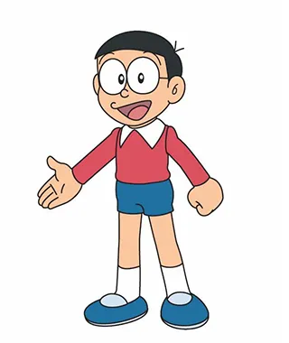

이력서 |
 | 이 름 | 노진구 | 나 이 | 11살 |
|---|---|---|---|---|
| 생 일 | 8월 7일 | 주 소 | 도라시 동남구 강변마을 | |
| 혈액형 | A형 | 소속 학급 | 5학년 3반 | |
자기소개 |
||||
공부도 꽝, 스포츠도 꽝. 겁쟁이 인물이다. 거의 대부분 영역에서 평균 이하인것도 모자라 죽을 때까지 억세게 운이 없는 운명(팔자)을 타고났으며,
성격도 소심하고 눈물도 많고 무능한 불쌍한 초등학교 5학년. 이야기는 노진구의 불행한 장래를 바꾸기 위해 미래의 현손(진구의 4대손, 즉 진구 아들 장돌이의 증손자)인
'장구'가 도라에몽을 보내주면서 시작한다. 이후 곤란하거나 트러블에 휘말릴 때마다 도라에몽에게 의지하며, 도라에몽에게서 사차원 주머니에서 꺼내는 비밀도구를 자주 빌려받곤 한다.
더 자라면서 앞으로 성격이 얼마나 변할지는 모르겠지만, 그래도 아직까지는 그야말로 도라에몽이 없이는 평범한 생활을 하기가 어렵고 힘든 편에 속하는 소년이다.
으아아아아앙 도라에몽 도와줘. |
||||